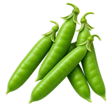

होम / हरी मटर

हरी मटर का भाव आज | Green Peas Mandi Price Today
हरी मटर के आज के उपलब्ध मंडी भाव देखें—रामगंज मंडी, रतलाम, आदमपुर और गन्नौर के मॉडल, न्यूनतम और अधिकतम रेट और प्रति किलो भाव।
नीचे मंडी-वार सूची में हरी मटर के उपलब्ध भाव दिए हैं। मंडी के नाम पर क्लिक करके उस मंडी की दूसरी फसलों के भाव भी देख सकते हैं।
हरी मटर का भाव कैसे देखें और रेट किन बातों से बदलता है
हरी मटर ताजी फली वाली सब्जी है और सूखी field pea से अलग crop है। इसका भाव फली की भरावट, हरापन और seasonal आवक के अनुसार बदल सकता है।
आज का हरी मटर भाव कैसे देखें
इस पेज की मंडी-वार तालिका में न्यूनतम, मॉडल और अधिकतम भाव देखें। अपनी नज़दीकी मंडी तथा उपलब्ध दूसरी मंडियों के भाव की तुलना करके फैसला लेना अधिक उपयोगी रहता है।
- अपनी मंडी या राज्य चुनकर भाव देखें।
- न्यूनतम, मॉडल और अधिकतम भाव में अंतर समझें।
- पुराने और नए उपलब्ध रिकॉर्ड में फर्क देखकर निर्णय लें।
गुणवत्ता और ग्रेड का असर
फली की भरावट, हरा रंग, कोमलता, आकार और ताजगी हरी मटर की quality में अंतर लाते हैं।
आवक, मांग और बाजार
कटाई के मौसम, जल्दी खराब होने की प्रकृति, स्थानीय supply और परिवहन से हरी मटर की कीमत बदल सकती है।
हरी मटर बेचने या खरीदने से पहले ध्यान रखें
- हरी और सूखी मटर का भाव अलग देखें।
- भरी हुई, हरी फलियां अलग रखें।
- प्रति किलो भाव और क्वालिटी साथ में तुलना करें।